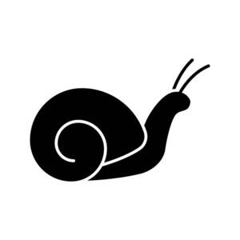
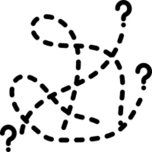

(verb)
intr: be heavy, slow, difficult [βαρυνειν]
qual: [βαρυς]
tr: make heavy [βαρυνειν]
qual: [βαρυς]
tr: make heavy [βαρυνειν]


1: be heavy, 2: be slow, 3: be difficult
complete++
| With following preposition:5273 | Crum: 706a | ||||||||
| ― ⲉ- SLBF | for, beyond5274 | Crum: 706b | |||||||
| ― ⲉϫⲛ- | upon5275 | ||||||||
| ― ⲛ- | dat
with, in as to5276 |
||||||||
| ― ϩⲁ- S | 5277 | ||||||||
| ― ϩⲛ- | in5278 | ||||||||
| ― ϩⲓϫⲛ- S | upon5279 | ||||||||
| ― SALBF | (noun male)weight, burden3570 | ||||||||
| ⲁⲧϩ. S | without weight3571 | Crum: 707a | |||||||
| ϯ ϩ. S | give, add weight3572 | ||||||||
| ϩ. ⲛϩⲏⲧ SALF | be slow of heart, long-suffering [μακροθυμειν]3573 | ||||||||
| c ⲉ- (vbal) | 8714 | ||||||||
| c ⲉϫⲛ- | 8715 | ||||||||
| p c ϩ. ⲗⲉⲥ A | p.c., heavy-tongued [βραδυγλωσσος]3574 | ||||||||
| p c ϩ. ϩⲏⲧ | long-suffering [μακροθυμος]8716 | ||||||||
| ⲙⲛⲧϩ. | patience [μακροθυμια]8717 | ||||||||
| ⲣ ⲛϩ., ⲟ ⲛϩ. | be patient8718 | ||||||||
| ϩⲣⲏϣⲉ SL
ϩⲉⲣϣⲉ S ϩⲣⲏϣⲓ, ⲉϩⲣⲏϣⲓ B ϩⲣⲉϣⲓ SB |
(noun female)weight [βαρος]3575 | ||||||||
See also:
Opposite:
Homonyms:
| view | ⲧϩⲣϣⲟ, ⲑϩⲣϣⲟ, ⲑⲁⲣϣⲟ {once} S ⲑⲉⲣϣⲁ Sf ⲑⲉⲣϣⲟ B ⲑ(ⲉ)ⲣϣⲉ- S ⲑⲉⲣϣⲟ⸗ SB ⲑⲉⲣϣⲁ⸗ SfA | (verb) tr: make heavy, so (mostly) terrify (caus of ϩⲣⲟϣ) [βαρειν, επικεισθαι, θαμβειν]
intr: as nn m1691 |
| view | ⲛϣⲟⲧ, ⲉⲛϣⲟⲧ SB ⲛⳉⲁⲧ A ⲛⲁϣⲧ† SABF ⲛⲁⳉⲧ† A ⲛⲉϣⲧ† F p c ⲛⲁϣⲧ- SBF p c ⲛⲁⳉⲧ- A | (verb) intr: be hard, strong, difficult & related meanings [σκληρος ειναι, σκληρυνειν, βαρυνειν]1218 |
| view | ⲛⲟⲩϣⲧ S ⲛⲟⲩⳉⲧ A | (verb) intr: be heavy, hard [παχυνειν, βαρυνειν]
tr (refl): meaning uncertain as nn, strength, violence1217 |
| view | ⲧⲙⲧⲙ SL ⲑⲟⲙⲧⲉⲙ, ⲧⲟⲙⲧⲉⲙ B ⲧⲙⲧⲙ-, ⲧⲉⲙⲧⲱⲙ† S ⲧⲉⲙⲑⲱⲙ† B | (verb) intr: be heavy, oppressed [επιβριθειν]1602 |
Opposite:
| view | ⲁⲥⲁⲓ SF ⲉⲥⲓⲉⲉⲓ A ⲁⲥⲓⲁⲓ B ⲁⲥⲱⲟⲩ† SF ⲁⲥⲉⲓⲱⲟⲩ† S ⲉⲥⲓⲱⲟⲩ† A ⲁⲥⲓⲱⲟⲩ† BO | (verb) intr:
― be light, relieved [κουφιζειν] ― be swift tr: lighten501 |
Homonyms:
| view | ⲱⲣϣ S ϩⲣⲟϣ B ⲁⲣϣ⸗ F ⲟⲣϣ† S ϩⲟⲣϣ† SB | (verb) intr:
― be cold [ξυχεσθαι] ― be scorched, inflamed (?) tr: sear1822 |
| view | ⲁⲣⲟϣ S ϩⲣⲟϣ B | (verb) intr: become cold [ημερουσθαι, ξυχειν]496 |
| view | (ϩⲱⲣϣ), ϩⲉⲣϣ- B | (verb) tr: run ship aground [επικελλειν]2272 |